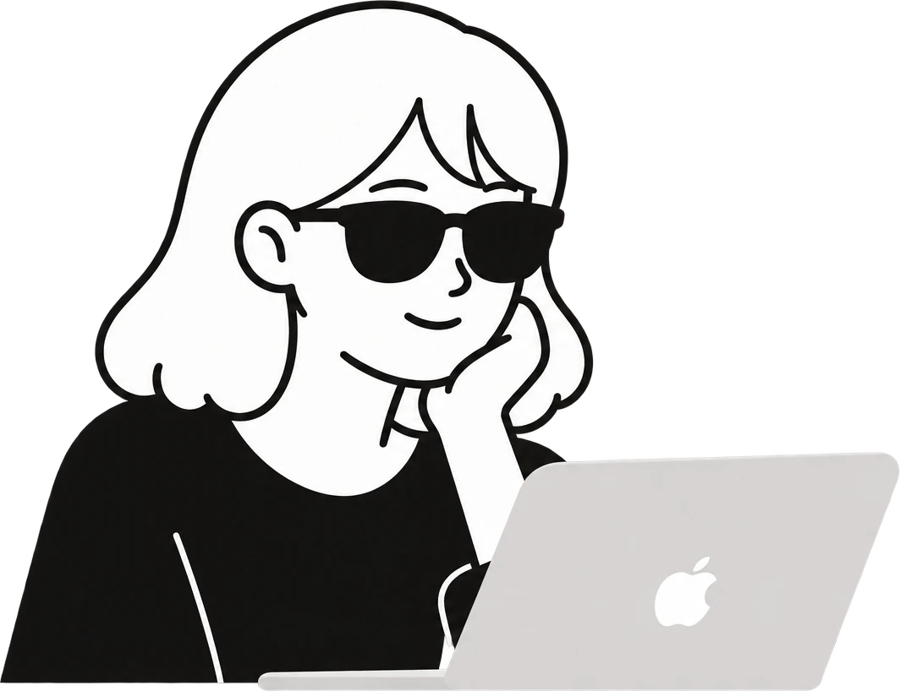

강나은
UX/UI · Product Designer
uxxxu-studio.com·kkangna@gmail.com

Career
복잡한 서비스를 직관적인 사용자 경험으로 만드는 UX/UI · Product 디자이너 강나은입니다.
약 20년간 웹·모바일 서비스, 금융·B2B·관리자 시스템, 제품 연동 앱, 전시·교육 콘텐츠의 UX/UI를 설계하고 디자인해왔습니다. 사용자 요구사항 분석과 기능 정의부터 IA, User Flow, Wireframe, UI·인터랙션 디자인과 디자인 시스템 구축까지 프로젝트에 따라 폭넓게 맡아왔으며, 디자인 PM·팀장으로 프로젝트를 리드한 경험도 함께 갖고 있습니다.
What I Do
-
UX/UI Design
웹·모바일 서비스와 업무 시스템의 IA, User Flow, Wireframe 설계부터 UI·인터랙션 디자인까지 수행
-
Product Design
AI 웨어러블, 제품 연동 앱, HiddenGEM 등에서 사용자 요구사항 분석과 기능 정의에 참여하고 서비스 구조와 사용자 흐름 설계
-
Complex Service UX/UI
삼성증권·현대캐피탈·은행연합회 등 금융 서비스와 B2B·커머스·관리자 시스템의 UX/UI 디자인
-
Design Leadership
디자인 PL·PM·팀장으로 디자인 방향 설정, 팀원 업무 분배, 시안 리뷰, 일정·품질 관리
-
Learning & Interactive Experience Design
어린이 AI 윤리 교육게임, 박물관 유물 학습게임 등 유치원생~초등학생 눈높이에 맞춘 UX/UI·게임 화면·3D 캐릭터 디자인, 전국 6곳 과학관·체험관 설치
-
Design System
Figma 기반 UI 컴포넌트와 아이콘 체계를 설계·디자인해 서비스가 늘어나도 일관된 UI 기준 유지
-
User Research & Data-Informed UX
AI 웨어러블 정부 R&D에서 사용자 인터뷰(4개 그룹, 20여 명)로 기능 방향 재정의, HiddenGEM에서 MVP 피드백과 출시 후 Google Analytics 데이터로 UI 개선
-
Visual & Character Design
UI 비주얼, 아이콘, 브랜딩, 제품 GUI, 3D 캐릭터·오브젝트 디자인 (AI 바른이, HiddenGEM, LS 스마트홈 스위치 등)
-
AI-Assisted Design
생성형 AI로 기능 검증과 콘셉트 비주얼을 빠르게 만들고, Claude Code·ChatGPT를 활용한 바이브 코딩으로 포트폴리오 사이트와 3D 인터랙션을 직접 구현
From Complexity
to Clarity.
복잡한 구조를 더 나은 경험으로 디자인합니다.
(주)프리텍
주요 업무
- 디자인팀장으로 디자인팀을 이끌며 웹·모바일 서비스 및 제품 연동 애플리케이션 UX/UI 디자인 진행 및 리드
- 팀원 업무 분배와 디자인 방향 설정, 일정·품질 관리
- 정부 R&D 과제 사용자 리서치 주도 및 UX/UI 기획·설계·디자인
- 제품 연동 모바일 애플리케이션 7건 UX/UI 기획 및 디자인
- 사용자 리서치와 요구사항 분석을 바탕으로 IA·User Flow·Wireframe·Screen Definition 설계 및 UI 디자인
- 제품 특성과 서비스 목적에 맞춘 UI 구조, UI 컴포넌트·아이콘 디자인 및 Figma 기반 디자인 시스템 구축
- 생성형 AI를 활용한 기능 검증, 제품 콘셉트 비주얼 및 제안서 시각화
- 자사 웹사이트 리뉴얼 및 운영 디자인, 서비스 구조 및 UI 개선
- 기획·개발·연구 담당자와 협업하여 R&D 산출물 작성 및 디자인 시안부터 구현까지 진행
주요 프로젝트
정부 R&D 「시각/청각 보조를 위한 초개인화 주변상황 안내 웨어러블 디바이스」 (주관기관)
Case Study →- 시·청각장애인용 AI 웨어러블 글래스 및 연동 모바일 앱 UX/UI 기획·디자인 총괄 (4년 과제 중 2년 차까지 참여)
- 시각장애인협회·청각장애인협회에서 보조앱 사용 여부에 따라 4개 그룹, 20여 명 사용자 인터뷰 진행 (질문지 작성, 인터뷰, 전사, 그룹별 분석)
- 인터뷰 결과 두 그룹의 불편이 상반됨을 확인하고, 하나의 기기로 함께 지원하던 방향을 그룹별 기능·사용 흐름으로 분리
- 시각장애인은 음성, 청각장애인은 진동 중심의 정보 전달 방식 설계, 반복 진동을 원하지 않는 의견을 알림 설계에 반영
- 정리한 기능을 생성형 AI로 사전 검증한 뒤 화면 구조에 반영
- IA, User Flow, Wireframe, 초기 UI 디자인 및 정부 R&D 산출물·화면 정의서 작성
제품 연동 모바일 애플리케이션 7건
seedN, SmartCUBE, Swasher↗, Endo Robotics↗, URINE, digiQUARK, FITTRIX↗
- 제품의 기능과 사용 환경을 분석하여 모바일 UX/UI 구조와 사용자 흐름 설계 및 UI 디자인
- seedN: AI 공간 온도 제어 관리자용 태블릿 대시보드·모바일 제어 화면 UX/UI 설계 및 디자인
- SmartCUBE: 공동주택 로봇 배송 서비스의 배송 상태·로봇 호출 흐름 설계 및 모바일 UI 디자인
- 프로젝트별 UI 컴포넌트와 아이콘 디자인, Figma 기반 디자인 시스템 제작
LS 통신 스마트홈 스위치 GUI
Case Study →- 4.3인치·5인치 디스플레이 환경에 맞춘 GUI 콘셉트 제안 및 최종 UI 디자인
- 스위치 UX/UI, GUI, 아이콘 디자인
- 제품 라이팅과 연결된 화면 인터랙션 설계 및 디자인
HD현대사이트솔루션 제어기·센서 패키지 개발 RFP
Notion ↗- RFP의 제어기·센서 패키지 요구사항 분석 및 제안 전략 수립
- 제안 방향에 따른 발표자료 구성 및 디자인
- 생성형 AI를 활용한 제품 콘셉트 및 비주얼 시안 제작
(주)이너프미디어
주요 업무
- R&D센터 디자인팀장으로 팀원과 함께 박물관·과학관·체험관 전시 콘텐츠의 UX/UI 및 시각 디자인 진행 및 총괄
- 프로젝트별 디자인 방향 설정, 팀원 업무 분배와 시안 리뷰, 일정·품질 관리
- 어린이·청소년 대상 게임형 학습 콘텐츠의 기획 참여, 게임 UI·화면·인터랙션 디자인
- 인터랙티브 체험형 콘텐츠의 사용자 흐름, UI 화면, 그래픽 요소 설계
- 터치스크린·키오스크·미디어월·투명 OLED·발판 등 전시 환경과 입력 방식에 맞춘 화면 구성 및 디지털 콘텐츠 디자인
- 3D 캐릭터·오브젝트, 아이콘, 콘텐츠 비주얼 디자인 (Figma, Photoshop, Illustrator, Spline)
- 자사 웹사이트 및 앱 서비스 UX/UI 디자인과 디자인 시스템 구축
- 생성형 AI 도구를 활용한 콘셉트 비주얼 및 콘텐츠 이미지 제작
- 프로젝트별 기획·개발 담당자와 협업하여 디자인 시안부터 실제 구현까지 진행
주요 프로젝트
AI 윤리 교육게임 '나만의 AI 만들기' (디지털윤리체험관)
Case Study →- 유치원생~초등학생 대상 AI 윤리 체험 게임 3종의 UX/UI 디자인 및 시나리오 기획 참여
- 추상적인 AI 윤리 개념을 모으기·피하기·고르기 동작으로 바꾸고, 세 게임의 조작 규칙을 하나로 통일
- 글을 읽기 어려운 아이도 따라 할 수 있도록 발자국 아이콘 기반 안내 UI 디자인
- 오작동이 잦던 센서 대신 4방향 발판 입력 방식에 맞춘 화면·인터랙션 설계
- 3D 캐릭터 'AI 바른이' 직접 디자인 (제안 단계 캐릭터 대신 최종 채택) 및 바닥 블록 판 등 주요 3D 오브젝트 디자인
- 서울시립과학관, 국립부산·대구·광주과학관, 한국잡월드, 전북어린이창의체험관 등 전국 6곳 설치·운영
히든젬(HiddenGEM) 앱·브랜드 사이트 (2025년 상반기 출시)
Case Study →- 서비스 기획 참여부터 앱·브랜드 사이트 UX/UI 디자인 총괄 및 브랜딩
- 수집형 콘텐츠의 화면 구조 및 사용자 흐름 설계·디자인
- 웹·앱 디자인 시스템 및 UI 컴포넌트 구축
- 브랜드 아이덴티티를 반영한 웹·앱 비주얼 디자인
- MVP 단계 사용자 피드백을 반영해 UX 개선
- 출시 후 SNS·굿즈 발송 등 홍보 기획 참여, Google Analytics 유입·체류 데이터를 바탕으로 회의를 거쳐 UI 개선
판교박물관 체험형 콘텐츠 - 판교 RUN·유물 PANG
Notion ↗- 어린이 대상 유물 학습 게임 UI 및 화면 디자인
- 러닝게임 방식에 맞춘 게임 진행 단계별 화면 구성 및 인터랙션 디자인
- 유물을 친근한 그래픽으로 재해석하여 게임 요소로 시각화
- 유물 콘텐츠를 쉽게 이해할 수 있도록 아이콘·그래픽 요소 및 피드백 UI 디자인
- 캐릭터 중심의 그래픽과 직관적인 조작·피드백 UI 구성
서울백제어린이박물관 체험형 콘텐츠
Notion ↗- 어린이 대상 체험형 전시 콘텐츠 UI 및 그래픽 디자인
- 「아카이브월」, 「토성 쌓기」, 「발굴일지」, 「풀무질 체험」 등 콘텐츠 디자인
- 어린이 사용자의 이해도와 조작성을 고려한 직관적인 UI 및 피드백 디자인
- 전시 동선과 체험 방식에 맞춘 화면 및 인터랙션 구성
한국잡월드 체험형 콘텐츠
Notion ↗- 청소년 대상 직업체험 콘텐츠 UX/UI 및 인터랙션 디자인
- HD현대 계열 산업 현장을 게임으로 체험하는 콘텐츠의 화면 디자인
- 직무·공정 체험 과정에 맞춘 인터랙션 및 게임화 구성
제주 설문대할망 전시관
Case Study →- 제주 신화 콘텐츠를 활용한 디지털 전시 UX/UI 및 콘텐츠 디자인
- 인터랙티브 키오스크 및 미니게임 화면 디자인
- 투명 OLED 디스플레이 환경에 맞춘 인터랙션 화면 설계 및 콘텐츠 디자인
- 신화 소재를 활용한 그래픽 및 시각 요소 디자인
- 캐릭터 제작을 제외한 화면 구성, UI, 콘텐츠 비주얼 등 디지털 콘텐츠 디자인 전반 담당
이너프미디어 공식 웹사이트 리뉴얼
Case Study →- 기업의 다양한 프로젝트와 사업 영역을 효과적으로 보여주는 웹사이트 UX/UI 디자인
- 프로젝트 성격에 따른 카테고리 및 콘텐츠 구조 구성
- 프로젝트를 아이콘으로 구분하여 분야별 콘텐츠를 직관적으로 탐색할 수 있도록 디자인
- 아이콘 및 디자인 시스템 구축
기타 프로젝트
- 한성백제박물관 「모두의 몽촌토성」↗ 스마트뮤지엄 AR 앱 UX/UI 디자인
- 춘천애니메이션박물관↗ 미디어월 및 음향체험 콘텐츠 「MAKE FOLEY」 디자인
(주)플러스
주요 업무
- 온라인팀 팀장으로 기업 홈페이지 및 자사몰 UX/UI 디자인 총괄
- 팀원 업무 분배와 디자인 방향 설정, 일정·품질 관리
- 반응형 웹사이트의 UX/UI 설계 및 시각 디자인, 개발 가이드 제작·전달
- 브랜드 아이덴티티를 반영한 컬러·타이포그래피·UI 컴포넌트 설계 및 디자인
- 제품 및 서비스 특성에 따른 정보구조와 콘텐츠 구성, 화면 디자인
- 자사몰 구축 및 운영 디자인, SNS 콘텐츠와 마케팅 커뮤니케이션 디자인
- Figma, Photoshop, Illustrator를 활용한 웹·그래픽 디자인 및 산출물 제작
- 기획·개발 담당자와 협업하여 디자인 구현 및 품질 관리
주요 프로젝트
PROPLUS 브랜드 웹사이트 리뉴얼
Notion ↗- 반응형 웹 UX/UI 및 비주얼 디자인 총괄
- 기술력과 신뢰감을 전달하기 위한 네이비 기반 컬러 시스템 및 UI 구조 설계·디자인
- 온수기 내부 부품을 그래픽 오브제로 활용한 메인 비주얼 디자인으로 제품 전문성과 브랜드 이미지 표현
- 제품 카테고리 및 리스트 UI를 구성하여 제품 탐색 구조 및 정보 접근성 개선
- Figma 기반 전체 화면 구조 및 UI 컴포넌트 설계·디자인
- Photoshop·Illustrator를 활용한 그래픽 및 세부 UI 제작
- 데스크톱·모바일 반응형 화면 설계·디자인 및 개발 가이드 제작
프리랜서
주요 업무
- 기업 제안 디자인 및 B2B 프로젝트 UX/UI 디자인
- 기업·브랜드 웹사이트 및 소셜커머스 콘텐츠 디자인
- 브랜드 특성과 프로젝트 목적에 맞춘 UX/UI 및 비주얼 디자인
- 기업 및 브랜드 제안서·프레젠테이션 디자인
- Figma, Photoshop, Illustrator를 활용한 UI·그래픽 디자인 및 산출물 제작
- 주요 클라이언트: 중앙선거관리위원회, 하이트진로, FOODHUNTER↗, 한국애너하임서비스센터 등
주요 프로젝트
HITE JINRO 전자전표 통합 시스템 UI 개편
Notion ↗- 전자전표 통합 시스템 UX 설계 및 관리자 UI 디자인
- 사용자 유형별 업무 흐름을 정리하고 홈·메뉴 구조 중심으로 UX 리디자인
- 전표 상태를 한눈에 확인할 수 있는 요약 블록 디자인
- 결재 프로세스를 직관적으로 보여주는 흐름도 및 화면 디자인
- ERP와 연동되는 입력·결재·처리 과정을 고려한 정보구조 및 화면 UI 설계·디자인
- Figma 기반 컴포넌트 설계 및 Photoshop·Illustrator를 활용한 최종 디자인 산출물 제작
중앙선거관리위원회 선거정보시스템 운영지원사업 PPT 디자인
Notion ↗- 「제20대 대통령 선거 선거정보시스템 운영지원사업」 보고자료 PPT 커버 및 템플릿 디자인
- 공공기관 보고자료의 특성과 사업 내용을 고려한 정보 중심의 프레젠테이션 디자인
- 선거정보시스템의 기술적 이미지를 전달하는 그래픽 모티프 및 비주얼 구성
- 표지·내지 템플릿의 디자인 체계 구성으로 자료 전반의 일관된 시각적 완성도 확보
(주)하마컴퍼니
주요 업무
- 디자인팀장으로 팀원 업무 분배와 디자인 방향 설정, 일정·품질 관리
- 브랜드 쇼핑몰 및 온라인 채널의 UX/UI·콘텐츠 디자인 총괄
- 쇼핑몰 상품·프로모션 콘텐츠 및 SNS 채널 디자인 제작·운영
- 브랜드 아이덴티티를 반영한 패키지↗ 및 인쇄 홍보물 디자인
- 온라인과 오프라인 채널의 디자인 방향 및 비주얼 일관성 관리
- 제품 및 브랜드 특성에 맞춘 이미지·그래픽 콘텐츠 기획 및 제작
프리랜서
주요 업무
- 기업·브랜드 사이트 및 커머스 사이트 구축·리뉴얼·유지보수 디자인
- 온라인 쇼핑몰 상세페이지 및 프로모션 콘텐츠 디자인
- 브랜드별 웹사이트 UI 및 콘텐츠 구성, 운영 디자인
- 사이트 운영 과정에서 발생하는 UI 수정 및 디자인 유지관리
- 기업·브랜드 프로젝트 제안 및 웹 디자인 시안 제작
- 클라이언트 요구사항을 반영한 디자인 기획·제작·수정 전반 담당
주요 프로젝트
RESTYLANE 브랜드 사이트 구축
Notion ↗- 레스틸렌 브랜드 및 제품 정보를 효과적으로 전달하기 위한 웹사이트 UX/UI 설계 및 디자인
- 제품·시술·브랜드 콘텐츠의 메뉴 및 정보 구조 구성
- 브랜드 이미지를 반영한 메인 비주얼과 콘텐츠 영역으로 브랜드 아이덴티티 구축
- 제품 상세 콘텐츠 및 이미지 중심의 정보 전달 화면 디자인
- 브랜드 사이트의 전체 화면 디자인 및 웹 콘텐츠 제작
커머스·브랜드 사이트 운영
Notion ↗- 다양한 기업·브랜드의 쇼핑몰·브랜드 사이트 유지보수 및 UI 개선
- 상품 및 콘텐츠 특성에 따른 상세페이지 구성 및 디자인
- 시즌·프로모션별 온라인 콘텐츠 제작 및 페이지 업데이트
- 기존 사이트의 콘텐츠 변경 및 디자인 유지관리
온라인 콘텐츠 디자인
Notion ↗- 쇼핑몰 상품 상세페이지 및 프로모션 페이지 디자인
- 브랜드 SNS 및 온라인 마케팅 콘텐츠 제작
- 제품 특성과 판매 목적에 맞춘 이미지·텍스트 구성 및 시각화
와이더플래닛
주요 업무
- 모바일 애플리케이션 및 커머스 서비스 UX/UI 디자인
- 서비스 특성에 따른 화면 구조 및 사용자 흐름 설계
- 모바일 환경을 고려한 UI 구성 및 화면 디자인
- 상품·콘텐츠 탐색 및 정보 확인을 고려한 모바일 UI 구성
- 초기 스타트업 서비스의 UI 요소 및 디자인 가이드 정리
- 기획·개발 담당자와 협업하여 디자인 시안 및 산출물 제작
주요 프로젝트
모바일 앱·커머스 서비스
- 모바일 서비스의 사용자 흐름 및 주요 화면 UX/UI 설계·디자인
- 상품 및 콘텐츠 탐색, 정보 확인 등 주요 사용자 행동을 고려한 화면 구성
- 모바일 환경에 맞춘 UI 요소 및 화면 디자인
초기 디자인 체계 구축
- 스타트업 초기 서비스의 화면 디자인을 위한 UI 요소 및 스타일 가이드 정리
- 서비스 전반의 일관된 UI 적용을 위한 디자인 기준 및 화면 구성 정립
(주)SK브로드밴드
주요 업무
- 운영팀 팀장으로 프리랜서 디자이너 운영 및 업무 분배, 일정·품질 관리
- SK브로드밴드 온라인 이벤트·프로모션 디자인 총괄
- 프로모션 목적과 콘텐츠 특성에 따른 페이지 및 비주얼 디자인
- 온라인 이벤트에 필요한 배너·페이지 등 디자인 산출물 제작
- 내부 담당자와 협업하여 운영 일정에 맞춘 디자인 제작·수정·적용
주요 프로젝트
SK브로드밴드 온라인 이벤트·프로모션
Notion ↗- 온라인 이벤트 및 프로모션 페이지 디자인
- 이벤트 성격과 콘텐츠에 맞춘 비주얼 및 화면 구성
- 프로모션 일정에 따른 디자인 제작 및 수정·적용
(주)이모션글로벌
주요 업무
- 프로젝트별 디자인PM으로 디자인팀을 이끌며 디자인 방향 설정, 일정·산출물·품질 관리
- 대기업 및 주요 브랜드 웹사이트 구축·리뉴얼 디자인
- 웹사이트 메인 시안 및 주요 화면 디자인
- 브랜드와 서비스 특성, 프로젝트 요구사항을 반영한 웹 UI 및 콘텐츠 구성·디자인
- 기획·개발·고객사 담당자와 협업하여 프로젝트 진행
- 신규 웹사이트 구축 및 리뉴얼 제안 디자인 제작
주요 프로젝트
대형 브랜드 웹사이트 구축·리뉴얼
- 삼성그룹↗, 삼성증권↗, 르노삼성↗, 팬택글로벌↗, CGV↗, 기업은행, 나이키, 시세이도, 현대하이카다이렉트↗, 현대캐피탈↗ 등 주요 브랜드 프로젝트 참여
- 브랜드 특성과 서비스 목적을 반영한 웹사이트 메인 및 주요 화면 디자인
- 프로젝트별 디자인 방향 수립 및 UI 구성·디자인
- 구축·리뉴얼 과정에서 디자인 산출물 제작 및 협업
디자인 PM
- 프로젝트별 디자인 일정 및 산출물 관리
- 기획·개발·고객사 담당자와 디자인 관련 업무 조율
- 디자인 시안 검토 및 프로젝트 진행 과정의 디자인 품질 관리
웹사이트 제안 디자인
- 신규 웹사이트 구축 및 리뉴얼 제안 프로젝트 참여
- 제안 목적과 브랜드 특성을 반영한 메인 시안 및 디자인 콘셉트 제작
(주)마우스닷컴
주요 업무
- 디자인 PL로 2~3명 디자이너와 함께 프로젝트 디자인 방향 설정 및 산출물 관리
- 공공기관 및 대기업 웹사이트 구축 프로젝트 시안 및 UI 디자인
- 프로젝트별 웹사이트 메인 및 주요 화면 디자인
- 기획·개발 담당자와 협업하여 웹사이트 구축 디자인 진행
주요 프로젝트
- 푸르지오 웹사이트 구축 디자인
- 웅진코웨이↗ 웹사이트 구축 디자인
- 정보화추진위원회, KTF MF 등 공공기관 및 기업 웹사이트 구축 프로젝트 디자인
프리랜서
주요 업무
- 기업 및 금융 서비스의 웹·UI 디자인 프로젝트 수행
- 프로젝트 특성에 따라 단독 또는 기획·개발·디자인으로 구성된 프로젝트팀으로 참여
- 웹사이트 구축 및 운영 서비스의 UI 디자인, 주요 화면 시안 및 콘텐츠 디자인
- 금융 업무 시스템의 사용 환경을 고려한 UI 설계 및 화면 디자인
주요 프로젝트
은행연합회 거래 시스템 UI 디자인
- 금융 업무 환경과 사용 목적을 고려한 화면 구성 및 UI 설계·디자인
- 주요 화면 디자인 및 UI 산출물 제작 단독 수행
두산인프라코어 웹사이트 구축
Notion ↗- 프리랜서 디자이너·기획·개발자로 구성된 프로젝트팀에서 디자이너로 참여
- 웹사이트 주요 화면 및 UI 디자인, 기획·개발 담당자와 협업하여 구축 디자인 진행
DAUM 커뮤니케이션 Csagent 운영
- Csagent 서비스 운영에 필요한 화면 및 콘텐츠 디자인
- 운영 과정에서 발생하는 디자인 업무 단독 수행
(주)애니엠커뮤니케이션
주요 업무
- 중국 주택·부동산 전자상거래 사이트 기획 및 디자인 단독 담당
- 서비스 목적과 사용자 이용 흐름을 분석하여 사이트 구조 및 콘텐츠 구성
- 메뉴 및 정보구조 설계부터 주요 화면 UI 및 비주얼 디자인까지 진행
주요 프로젝트
중국 주택·부동산 전자상거래 사이트 구축
- 중국 주택·부동산 시장을 대상으로 한 전자상거래 서비스 기획
- 서비스 구조, 메뉴 및 콘텐츠 구성 등 사이트 기획 전반 담당
- 사용자 흐름에 따른 화면 구성 및 UI 디자인
- 웹사이트 전체 디자인 및 결과물 제작
LG전자(주)
주요 업무
- LG전자 글로벌 B2C 웹사이트 구축 프로젝트 디자인 참여
- 국가별로 구성된 디자인·기획·개발 프로젝트팀에서 카자흐스탄 사이트 디자인 전담
- 글로벌 브랜드 기준과 현지 시장·서비스 특성을 고려한 B2C 웹사이트 UI 및 비주얼 디자인
- 기획·개발 담당자와 협업하여 디자인 산출물 제작 및 구축 진행
주요 프로젝트
LG전자 글로벌 B2C 플랫폼 - 카자흐스탄 사이트
Notion ↗- 카자흐스탄 사이트의 주요 화면 및 UI 디자인, 콘텐츠 구성
- 글로벌 브랜드 기준을 유지하면서 현지 콘텐츠와 서비스 특성에 맞춰 디자인 적용
(유한)세경세무법인
주요 업무
- 기업 홈페이지 및 분당 부동산 포털 구축·운영 디자인
- 홈페이지 콘텐츠 업데이트 및 페이지 디자인
- 부동산 포털 콘텐츠 및 화면 디자인
- 운영 과정에서 발생하는 디자인 수정 및 유지보수
시티러버
주요 업무
- KT 관련 웹사이트 운영 디자인 지원
- 웹페이지 콘텐츠 및 화면 디자인 수정·제작
- 웹사이트 운영에 필요한 디자인 업무 지원
- 디자인 산출물 제작 및 수정 업무